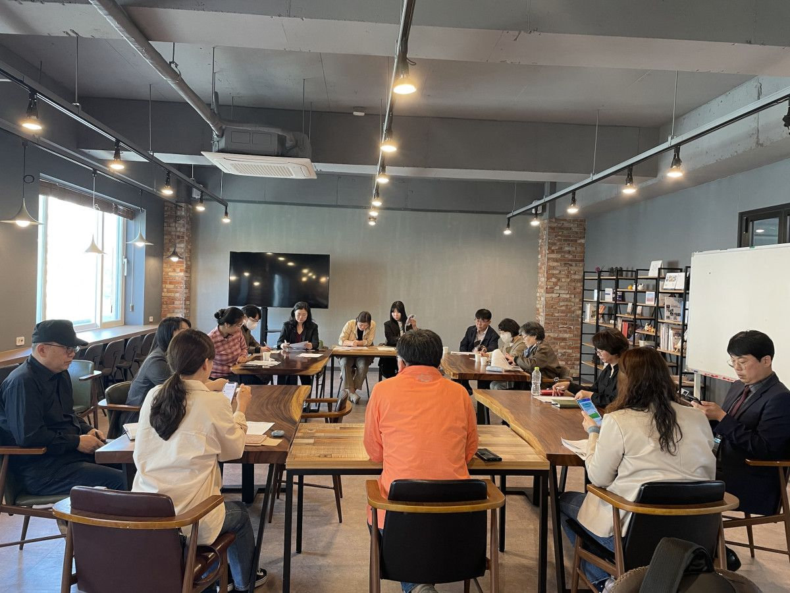

지난 4월 19일(수)에 진행된 '생생마켓 사업단 회의' 현장입니다
생생마켓은 원주협동사회경제네트워크와 원주시사회적경제지원센터가 운영하는 사회적경제 프리마켓입니다. 건강한 먹거리를 저렴하고 신선하게 공급해 생산자와 소비자 모두 행복한 사회적경제 장터에요!
코로나로 주춤했던 생생마켓, 2023년 첫 생생마켓은 5월 13일 '숲으로 간 생생마켓'입니다. 원주 신림면 '피노키오숲캠핑장'에서 열릴 예정이에요.
회의에 참여한 사회적기업 셀러들과 캠핑장이라는 장소에 어울리는 다양한 상품과 체험, 이벤트 활동을 논의했는데요. 역시 멋진 의견들이 많았습니다
5월 13일(토), 피노키오숲캠핑장에서 열리는 「숲으로 간 생생마켓」 많은 관심 부탁드려요